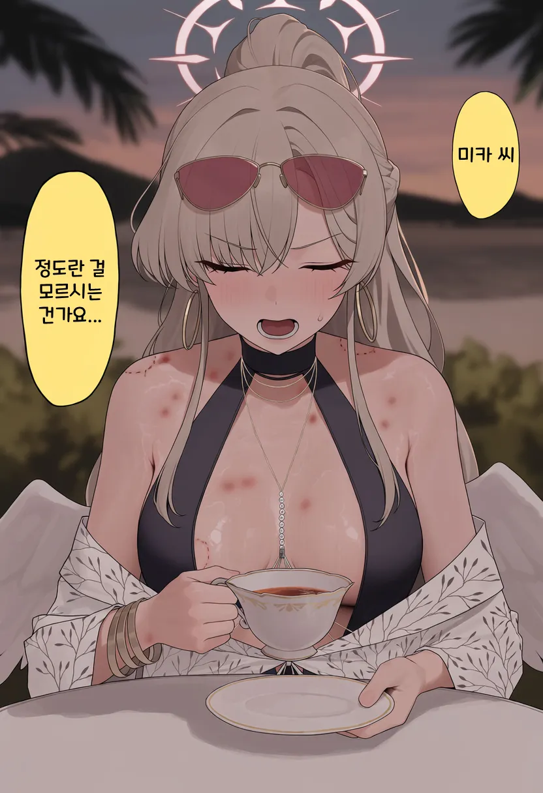

15 · 8 · 방금 전 · 원문

수집 당시 댓글 8개
연주연주야 · 12 시간 전
개변태새끼들
랄부 · 12 시간 전
유두아녀? ㅋㅋㅋ
빵빵빵빵빵빵 · 12 시간 전
입에 털하나 정돈 붙어있어야하는데ㅋㅋ
게임은PC로 · 1 시간 전
미카 유륜 존나 크네
↳ 답글 · 애옹애옹 · 12 분 전
큰 가슴에는 큰 유륜이 따른다
보듬어주는사회 · 2 분 전
Cex
RH1N0 · 방금 전
살리단 · 방금 전
선생 죽다
개변태새끼들